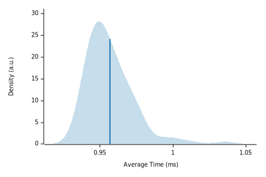

Benchmarks
vault-kms-provider/health
|  |
{kind=link}
{kind=link}
Additional Statistics:
| Lower bound | Estimate | Upper bound | |
|---|---|---|---|
| Slope | 917.75 µs | 920.66 µs | 923.65 µs |
| R² | 0.9705393 | 0.9718718 | 0.9704582 |
| Mean | 916.72 µs | 919.91 µs | 923.44 µs |
| Std. Dev. | 12.345 µs | 17.221 µs | 21.504 µs |
| Median | 911.50 µs | 914.14 µs | 916.16 µs |
| MAD | 5.7218 µs | 8.5721 µs | 12.198 µs |
{kind=link}
{kind=link}
{kind=link}
{kind=link}
{kind=link}
{kind=link}
Understanding this report:
The plot on the left displays the average time per iteration for this benchmark. The shaded region shows the estimated probability of an iteration taking a certain amount of time, while the line shows the mean. Click on the plot for a larger view showing the outliers.
The plot on the right shows the linear regression calculated from the measurements. Each point represents a sample, though here it shows the total time for the sample rather than time per iteration. The line is the line of best fit for these measurements.
See the documentation for more details on the additional statistics.